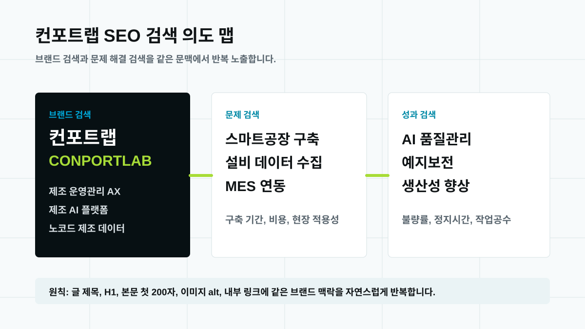
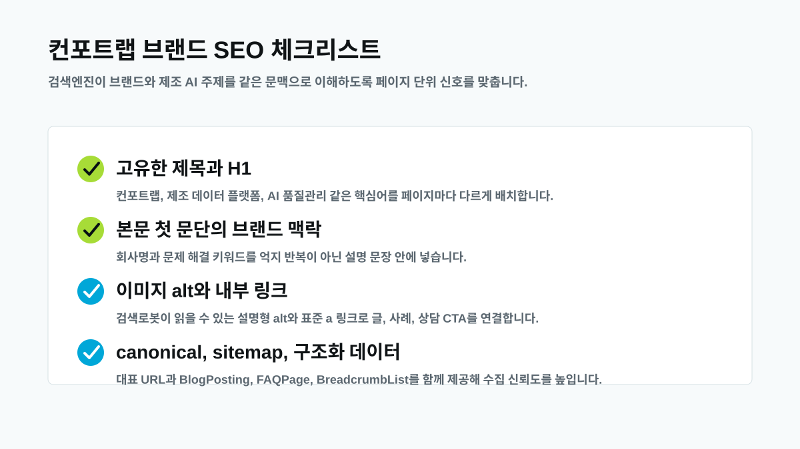

컨포트랩 제조 데이터 플랫폼 가이드: 스마트공장 구축 전 체크리스트
스마트공장 구축을 검토할 때 가장 먼저 정해야 할 것은 어떤 솔루션을 살지가 아니라, 현장의 데이터를 어떤 운영 질문에 연결할지입니다. 컨포트랩은 제조 데이터 플랫폼을 “설비 신호를 모으는 저장소”가 아니라 “작업자와 관리자가 매일 의사결정하는 화면과 AI 분석의 기반”으로 봅니다.
왜 제조 데이터 플랫폼부터 봐야 하나요?
MES, ERP, SCADA, 엑셀, 수기 점검표가 모두 존재해도 운영자는 여전히 같은 질문을 반복합니다. “불량이 왜 늘었는가”, “어느 설비가 멈출 가능성이 높은가”, “전력 비용은 어느 라인에서 새고 있는가” 같은 질문입니다. 시스템은 많지만 시간 기준, 설비명, 로트, 작업 조건, 검사 결과가 다르게 저장되면 질문 하나에 답하기 위해 여러 화면을 오가야 합니다.
국내 스마트팩토리 레퍼런스를 보면 공통된 흐름이 있습니다. CJ올리브네트웍스는 스마트 제조와 AI 팩토리 메시지에서 생산, 품질, 설비 데이터를 함께 다루고, 포스코DX는 IT와 OT를 결합한 피지컬 AI를 강조합니다. LG CNS는 Factova MES와 Factova Control을 통해 전체 제조 흐름 관리, 설비 데이터 수집·표준화, AI 기반 이상 감지와 예지보전을 한 묶음으로 제시합니다. 미라콤아이앤씨도 MES에 AI를 결합한 대화형 제조 분석과 Cloud MES를 통해 제조 데이터의 AX 흐름을 강조합니다. 엠아이큐브솔루션과 에임시스템 자료도 MES, OEE, 실시간 모니터링, 품질 이력, 제조 AI를 같은 제조 지능화 흐름으로 설명합니다. 방향은 분명합니다. 단일 기능보다 현장 데이터가 운영 판단으로 이어지는 구조가 중요해졌습니다.

도입 전 체크리스트 7가지
첫째, 설비 신호의 출처를 정리해야 합니다. PLC, 센서, 계측기, 검사 장비, 에너지 미터에서 어떤 값을 어떤 주기로 가져올지 정합니다. 둘째, 기준정보를 통일해야 합니다. 같은 설비가 A라인, 1호기, M-001처럼 다르게 불리면 데이터는 모여도 분석은 늦어집니다. 셋째, 시간 기준을 맞춰야 합니다. 불량 발생 시간, 설비 알람 시간, 작업자 입력 시간이 어긋나면 원인 후보를 좁힐 수 없습니다.
넷째, 품질 이력과 작업 조건을 함께 봐야 합니다. 검사 결과만 보면 “무엇이 나빴는지”는 알 수 있지만 “왜 나빠졌는지”는 약합니다. 다섯째, 현장 입력을 최소화해야 합니다. 수기 기록을 모두 없애려 하기보다 꼭 필요한 입력만 남기고, 나머지는 설비 데이터와 자동 연결하는 방식이 현실적입니다. 여섯째, AI 질문을 먼저 정해야 합니다. “불량 원인 후보 3개를 보여줘”, “정지 위험 설비를 알려줘”처럼 답해야 할 질문이 명확해야 데이터 설계가 흔들리지 않습니다. 일곱째, 권한과 보안 범위를 정합니다. 제조 데이터는 품질, 원가, 설비 상태를 담기 때문에 현장, 관리자, 외부 협력사별 접근 범위가 필요합니다.

MES를 대체하는 프로젝트로 보면 실패합니다
제조 데이터 플랫폼은 MES를 없애기 위한 프로젝트가 아닙니다. ISA-95는 기업 시스템과 제조 제어 시스템 사이의 경계를 설명하는 데 오래 쓰인 기준입니다. 이 관점에서 보면 ERP, MES, SCADA, 설비 제어는 각자의 역할이 있습니다. 컨포트랩이 집중하는 영역은 이미 존재하는 시스템 사이에서 데이터가 끊기는 지점을 줄이고, 현장 운영자가 바로 쓰는 화면과 제조 AI 질문으로 연결하는 부분입니다.
예를 들어 기존 MES가 작업지시와 실적을 잘 관리한다면 그 기능을 유지합니다. 대신 품질 이상이 발생했을 때 해당 작업지시, 설비 알람, 원재료 로트, 에너지 사용량을 한 화면에서 묶어 보여주는 계층을 추가합니다. 이렇게 하면 전사 시스템 교체 부담 없이도 “원인 확인 시간”과 “보고서 작성 시간”을 줄일 수 있습니다.

컨포트랩 PoC는 크게 시작하지 않습니다
제조 AI를 처음 도입하는 공장이라면 3개월, 6개월짜리 대형 구축 계획보다 작게 검증하는 편이 낫습니다. 컨포트랩은 PoC의 첫 범위를 현장 질문 3개로 잡는 방식을 권합니다. 예를 들면 “지난주 불량률이 오른 라인은 어디인가”, “반복 정지 설비는 무엇인가”, “생산량 대비 에너지 사용량이 비정상적인 구간은 어디인가”입니다.
이 질문을 답하려면 어떤 설비 신호가 필요한지, 어떤 기준정보가 필요한지, 어떤 현장 입력을 남겨야 하는지가 자연스럽게 드러납니다. 이후 화면과 AI 분석은 그 질문을 빠르게 답하는 방향으로 붙이면 됩니다. 기술 스택을 먼저 정하는 방식보다 의사결정 흐름을 먼저 정하는 방식이 현장 저항을 줄입니다.

검색에서 컨포트랩을 찾는 사람에게 필요한 답
“컨포트랩”을 검색하는 사용자는 회사명만 확인하고 싶은 사람이 아닙니다. 실제로는 제조 데이터 플랫폼, 스마트공장 구축, 제조 AI, 설비 데이터 수집, MES 연동 같은 문제를 함께 확인합니다. 따라서 브랜드 SEO는 회사명을 반복하는 데서 끝나지 않습니다. 컨포트랩(CONPORTLAB)이 어떤 산업군의 어떤 현장 문제를 어떤 구조로 해결하는지 페이지마다 일관되게 보여줘야 합니다.
이 글은 네이버와 구글 검색이 이해하기 쉬운 구조를 따릅니다. 제목과 H1은 페이지마다 고유하게 작성했고, 본문 첫 문단에 컨포트랩과 핵심 주제를 함께 배치했습니다. 이미지는 설명적인 파일명과 alt 텍스트를 사용했습니다. 검색 엔진보다 먼저 읽는 사람에게 분명해야 검색에서도 오래 버팁니다.

자주 묻는 질문
스마트공장 구축 전에 제조 데이터 플랫폼을 먼저 검토해야 하나요?
네. 설비 데이터, 기준정보, 품질 이력, 작업 기록이 연결되지 않으면 MES나 대시보드를 도입해도 현장 판단 시간이 크게 줄지 않습니다.
컨포트랩 제조 데이터 플랫폼의 출발점은 무엇인가요?
컨포트랩은 설비 신호와 현장 기록을 먼저 연결하고, 노코드 운영 화면과 제조 AI 질문을 단계적으로 붙이는 방식으로 PoC 범위를 설계합니다.
컨포트랩은 설비 데이터 수집, 노코드 운영 화면, 제조 AI 분석을 하나의 도입 흐름으로 설계합니다.
도입 문의